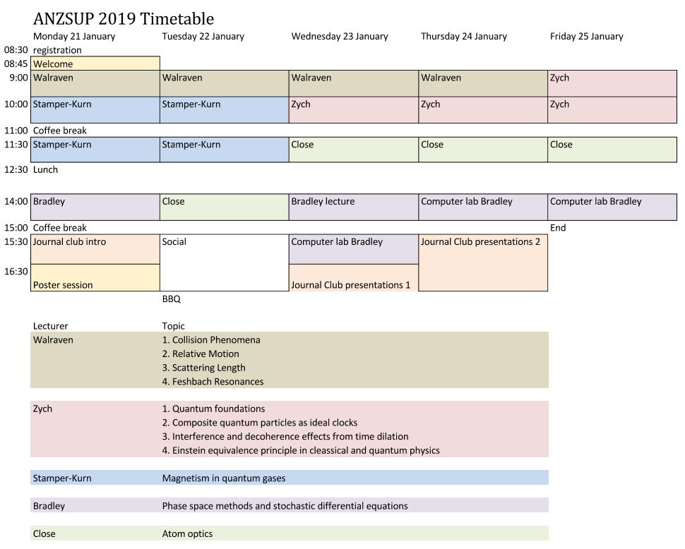
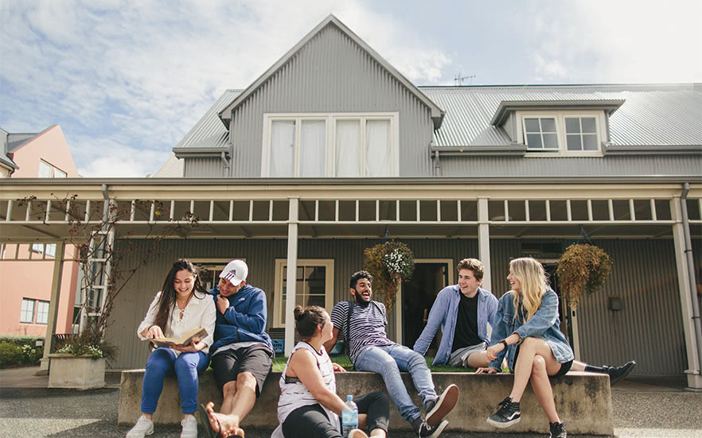
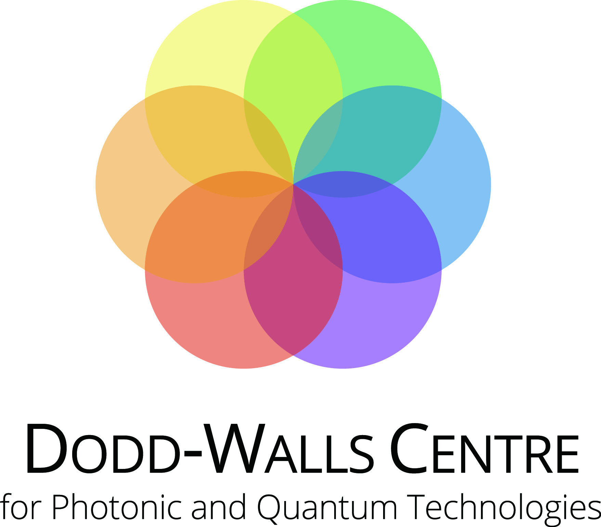
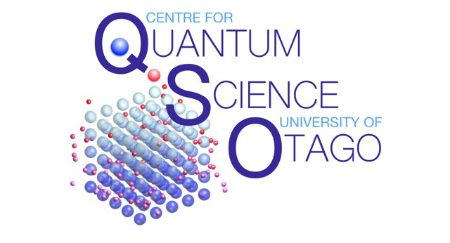

21 to 25 January 2019 - Dunedin, New Zealand
The Australian and New Zealand School in Ultracold Physics (ANZSUP) is a one-week graduate summer school for students at Master level and beginning PhD students. When creating temperatures in the lab that are colder than outer space, the behaviour of matter is dominated by the laws of quantum mechanics. The ANZSUP summer school is aimed at providing graduate students with the relevant background in experiments and theory in the field of ultra-cold physics. This year's school will cover the following topics:
- Laser trapping and cooling of ultra-cold atoms
- Atom optics
- Magnetism in quantum gases
- Phase space methods and stochastic differential equations
- Quantum physics and general relativity
Lecturers from Australasia and further afield will provide mini-courses on a given topic. In addition to lectures, we plan hands-on activities including a programming workshop in the computer language Julia.
Timetable

List of confirmed lecturers:
- Jook Walraven (University of Amsterdam)
- John Close (Australian National University)
- Ashton Bradley (University of Otago)
- Magdalena Zych (University of Queensland)
- Dan Stamper-Kurn (University of California, Berkley)
School Venue
The Ultracold Atomic Physics School will be held in Dunedin, New Zealand at the University of Otago hosted by the Dodd-Walls Centre for Photonic and Quantum Technologies.
The lectures will be held in the Physics Department, Level 3, Science III Building, 730 Cumberland Street, Dunedin.
Accommodation

Accommodation for the 2019 ANZSUP Summer School has been booked at the Caroline Freeman Residential College for the cost of $70 per night including breakfast. The College is a 5 minute walk from the University of Otago Campus.
Caroline Freeman College, 911 Cumberland Street, North Dunedin
Fees
The fees for attending this year's ANZUP are $300 (New Zealand dollars). A limited number of scholarship are available (see below). The fee includes lunches and supports the costs of running the school.
Dates
23 November 2018: Application deadline for scholarships
14 December 2018: Registration deadline (extended) - fees for the ANZSUP and accommodation have to be paid
20 January 2019: Travel day for arriving in Dunedin.
21 January 2019: Lectures will start in the morning.
25 January 2019: Lectures will finish at noon.
Registration
On-line registration click here
Scholarships
A limited number of fee-waiver scholarships are available. To apply for a scholarship, please send an application letter, your CV, and a letter of support from your academic supervisor to anzsup2019@gmail.com by the application deadline of 23 November 2018. The number and amount of scholarship support will be decided and notified before the registration deadline of 30 November 2018.
Dodd-Walls Centre students are encouraged to apply to the Dodd-Walls Centre Travel Pool for support instead.
Scientific Coordinators
- Joachim Brand (Chair), Massey University, New Zealand
- Blair Blakie, Otago University, New Zealand
- Maarten Hoogerland, Auckland University, New Zealand
- Meera Parish, Monash University, Australia
- Uli Zuelicke, Victoria University of Wellington, New Zealand
Code of Conduct and Diversity/Inclusivity Statement
ANZSUP is dedicated to providing a harassment-free experience for everyone, regardless of gender, sexual orientation, disability, physical appearance, race, ethnicity, political affiliation, nationality, language, or religion – and not limited to these aspects. We are dedicated to cooperation, civility, and respect, and do not tolerate harassment in any form. Sexual or discriminatory language or imagery is not appropriate for any part of the event. Participants violating these rules may be sanctioned or expelled at the discretion of the organisers.
We are also dedicated to improving the ethnic and gender diversity in our community and therefore would like to particularly encourage women and minorities to attend. This is in keeping with the Dodd-Walls Centre’s Equity and Diversity principles, which can be found here https://www.otago.ac.nz/dodd-walls/about/diversity/index.html
About Us
Read about the history of ANSUP and access the web pages of previous editions of the summer school at http://2015.anzsup.org/about_us.html
Sponsors

Dodd-Walls Centre 2019 Symposium
The 12th Annual Dodd-Walls Centre Symposium is being held in Dunedin from the 28th - 31st January 2019. For further details please click here.